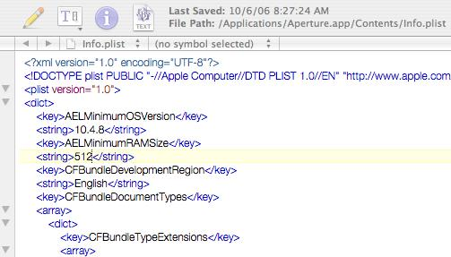

Experience 100％ Apple Aperture 1.5!
10/6/2006 9:29:08 AM

Aperture是让人兴奋的摄影处理软件，强大修正功能加上方便的图片版本管理成为我最爱。
但由于Apple硬件革命ing，让很多和我一样还在用PPC老机的Macer无缘Aperture。
于是有了破解的需求，但是见新版本1.5已经放出数日，依然没有看到破解硬件限制的文件出现在网上.
于是起了自己动手的念头。
以下写的内容可能要被Apple打的，仅供大家参考体验，切勿商业利用。
国外的高手已经发现1.5与之前版本硬件限制程序是一样的，只是二进制文件中的位置不一样。
具体需要更改的地址有：
0xb548 40 9E 00 88 -> 48 00 00 88
0xb5e4 40 9E 00 88 -> 48 00 00 88
0xf6b8 40 9E 00 D8 -> 48 00 00 D8
用任何16进制编辑起都可以完成。
修改好上面三个地方，CPU和显卡的限制已经消除了。

下面我们来解决内存的限制，
用普通文本编辑器编辑Info.plist文件，找到下面的小节：

把其中的"1000"换成一个小于或等于你内存大小的整数，如"512"。
改好后打开Aperture，不再提示“硬件不被支持”，而提示需要升级图片库，按提示升级就行。
新版本运行速度快了很多，愿大家Good Luck！
最后上传我修改好的文件，方便那些比较懒的朋友。

注：我的是iBook1.33/768M，所以内存限制改成512，大家可以自行修改。
Download:
http://www.box.net/public/v1pvg4hllx


Comments
- 10/7/2006 1:47:46 AM
已经无法下载了，出错提示为：该序列号已下载过更新烦请老大能否提供下载连接？谢谢
- 10/7/2006 3:39:32 AM
aperture不能在Apple官网下载了，但是可以直接用系统update更新～大多数的SN已经封了，update系统到10.4.8就能update aperture到1.5了哦。
- 10/6/2006 5:37:20 PM
aperture1.5 是不是非要升级到10。4。8后才会自动更新的？在10。4。6里面不能安装吗？